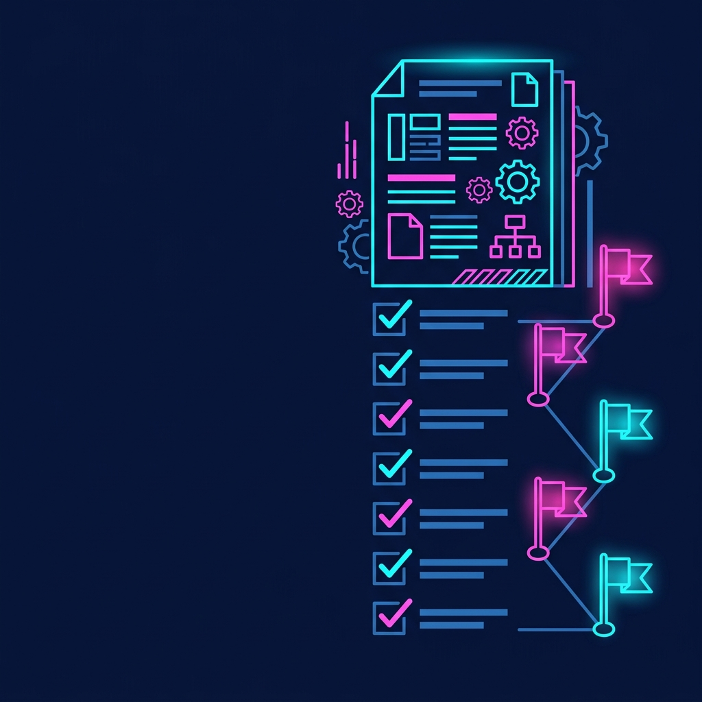
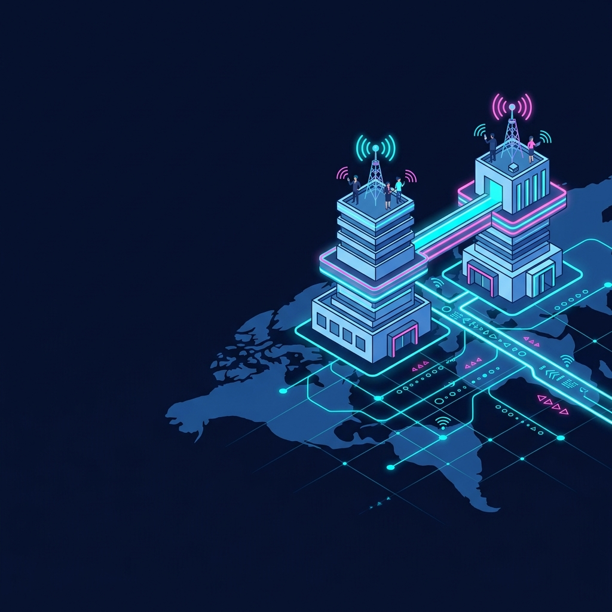

新規事業開発

生成AI・DX推進、マッチングアプリ、クラウドセキュリティまで。本質的な価値設計に基づき、事業価値を最大化するシステム開発実績。

社内のドキュメントやSlackログなどの機密情報を安全に検索・活用。権限管理やオプトアウトAPI設計を考慮したセキュアなRAGインフラ構築。
実績を見る
面談動画からWhisperとGPT-4oを用いて表情・感情・文脈を解析し、スキルスコアリングとフィードバックレポートを自動生成するシステム。
実績を見る
音声読み上げやコントラスト比などWCAG 2.1アクセシビリティに準拠し、証明書による本人認証を備えた当事者向けマッチングアプリ。
実績を見る
オンプレミスFilemakerのパフォーマンス遅延をロジック見直しとAWS移行により解決し、検索クエリと帳票印刷を高速化。
実績を見る
古い物理サーバーで稼働するレガシーWebシステムをコンテナ化。Cloud Runを活用したサーバーレス構成で保守不要とコスト削減を実現。
実績を見るCloudflare導入、Zero Trust Access、Cloud Armor、OIDC CI/CDなど17項目のクラウドセキュリティを徹底強化した堅牢インフラパッケージ。
実績を見る